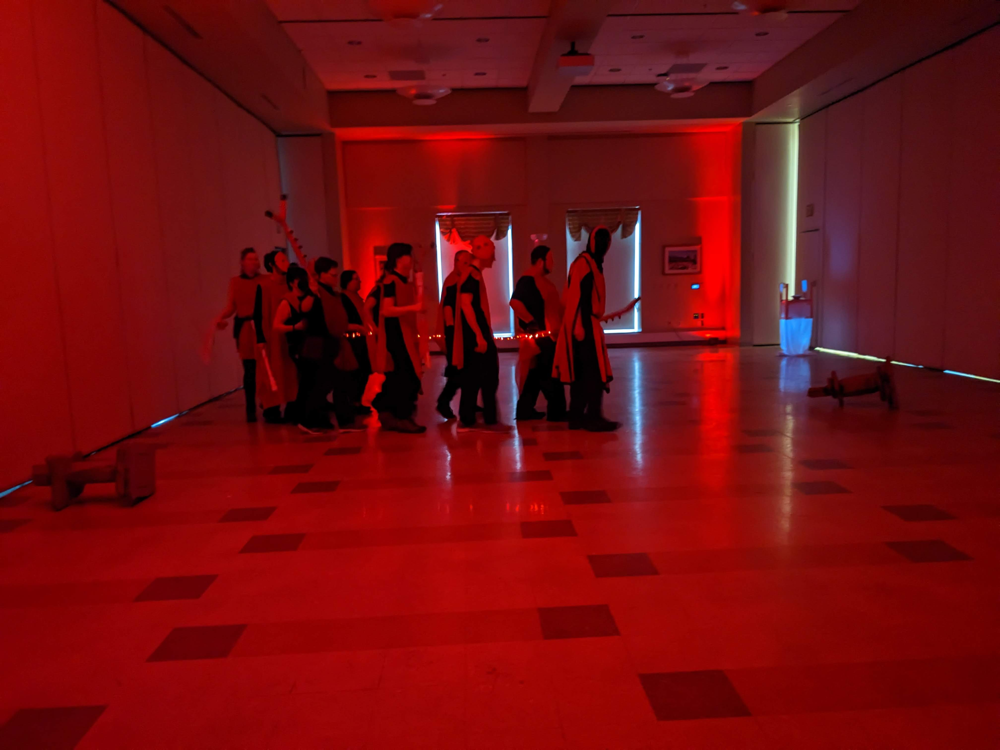

On April 17th, the Chimeron Militia and associated adventurers entered a place known as the Fortress of Doors to combat a corrupting force called The Red. We were quickly overrun with mold that had been spreading through the fortress, but were fortunately able to activate a "Source Well" which granted us powers to resist the Red and the Mold.
The Red had been entering the Fortress through a corrupted door, so we had to shut it. Unfortunately, it was guarded by some of their strongest forces, and despite our best efforts, we could not reach the door.  In order to shut the door, Fern had to call on the powers of the King of Chimeron, Alexander Cecil. They stopped time, and placed a magical doorstop in the door, forcing it shut for good.
As we progressed to the core of the Fortress to finish purifying it from the Red, we encounted a monster from the past: LOOP. Accompanied by Conga music and lightning bolts, it made the process of purifying the core and rescuing the Fortress much more difficult.